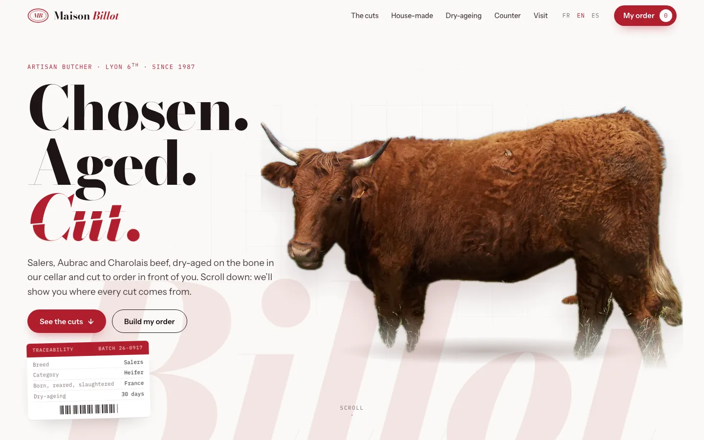
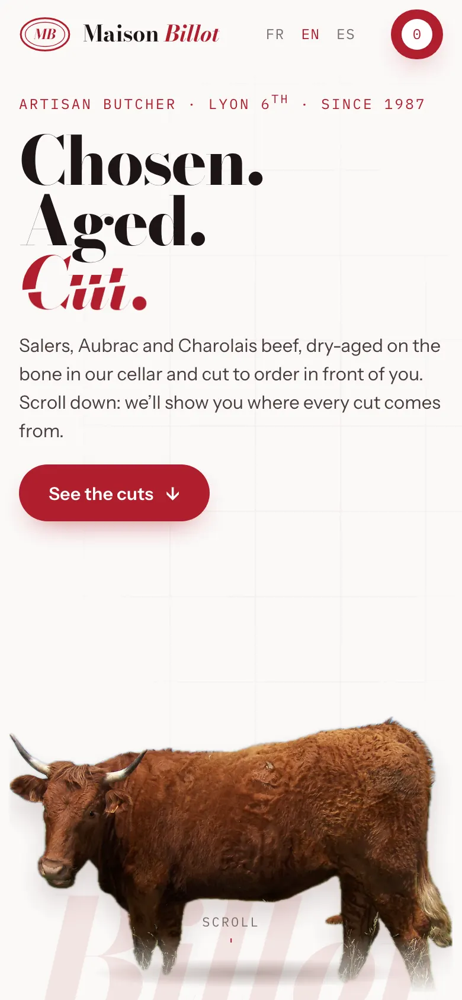

Maison Billot
Beef explained cut by cut: as you scroll, the animal separates into 23 photographed cuts, each linked to its area.
- Scroll-driven anatomy: 23 areas and their cuts
- “What’s cooking?” guide: barbecue, pot-au-feu, tartare
- Exploded-view merguez and an interactive ageing room
- Click & collect orders, paid in store


Promo video · 60 s
YouTube, Facebook on desktop, websites